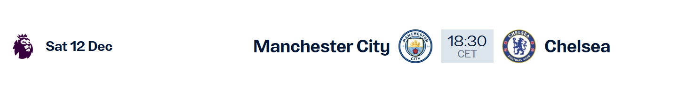

Week-end à Manchester
12 et 13 décembre 2026
Un voyage pour emmener des enfants malades voir un match de Manchester City.
Groupe de 18 personnes
10 adultes et 8 enfants malades
Vol aller
Samedi 12 décembre 2026
Jet2 · LS946
10 h 45Lyon (LYS)
11 h 45Manchester (MAN)
Notre hôtel
ibis budget Manchester Centre Pollard Street
2 Pollard St, Manchester M4 7DB, Royaume-UniNuit du 12 au 13 décembre 2026
Le match
Manchester City – Chelsea
Samedi 12 décembre 2026
Etihad Stadium, Manchester
17 h 30 à Manchester
18 h 30 en France (CET)

Vol retour
Dimanche 13 décembre 2026
Brussels Airlines
17 h 25Manchester (MAN)
19 h 50Bruxelles (BRU)
Escale à Bruxelles : 1 h 15
21 h 05Bruxelles (BRU)
22 h 30Lyon (LYS)
Horaires locaux. Manchester a une heure de moins que Lyon et Bruxelles.